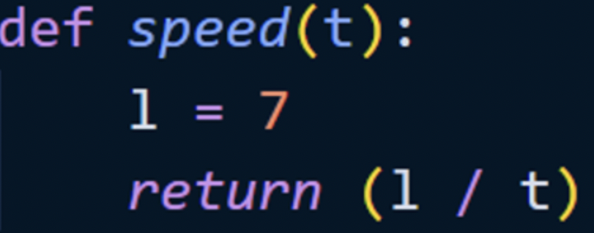

Hjernen af vores kode ligger i funktionen motionDetect():
Først nulstiller vi vores sensor (for sikkerheds skyld), med pir.wait_for_no_motion(). Det vil sige at koden vil ikke gå videre, indtil sensoren opdager ingen bevægelse. Det bekræftes med en print i terminalen: print(‘No motion detected’). Derefter skaber man et liste, “crisp”, som kommer til at indeholde de beregnet hastigheder. Det er hvad funktionen motionDetect() returnere. Her er hvordan det sker: 1. Funktionen speed() er defineret:
Den har en defineret variable, l, sæt til 7 (læs mere i “testmåling af sensor), tager et argument, t, og returnerer kvotienten af l divideret med t. Her genkender man godt formlen for middelhastigheden: v = d / t. 2. Variablen t bliver udregnet længere ned i koden:

Her er et tilfældigt eksempel: t = 3.5 sekunder speed(t) = speed(3.5) = 3.5 / 7 = 0.5 str(speed(3.5)) = ‘0.5’ Og det bliver til: crisp.append(str(speed(3.5))) Hvis vi skulle print det i terminalen, ville det give: [‘0.5’] Så definerer vi to variabler, “start” og “now”, til at være det tidspunkt hvor ingen motion er opdaget. “start” bruges for variablen t, og ved vores while-loop, mens “now” kun for vores while-loop. Til sidst defineres en sidste variable, duration, som sættes til at være 10200 sekunder, som svarer til 2 timer og 50 minutter. Vi har nu udregnet hastighedernes middelværdi: motionDetect() returnere “crisp”, som er en liste af alle hastigheder.
Vi sætter en variable, data, til at være hvad funktionen returnerer, så “data” er en liste. Så sætter vi en tilfældige variable, her x, lig med 0, som bliver til summen af alle vores data i listen. “i” er en anden tilfældige variable, som man vil bruge til at “iterate” gennem data-listen:
Her er et tilfældigt eksempel: Hvis data = [2, 3, 4, 5], så bliver x = 2 + 3 + 4 + 5 = 14 Vi bruger float() til at specificere, at det tal den skal tage fra listen er hele kommatallet. Middelværdien beregnes med det nye x-værdi, som divideres med længden af listen, som vi får med len():
Til sidst bruger vi csv-biblioteket til at kunne skrive vores data ind i en csv-fil således:
Den første linje laver en ny fil som hedder “data.csv”, og skriver ind vores data, som er listen, og middelværdien “average”.
Tilbage til Astro-pi hovedsiden